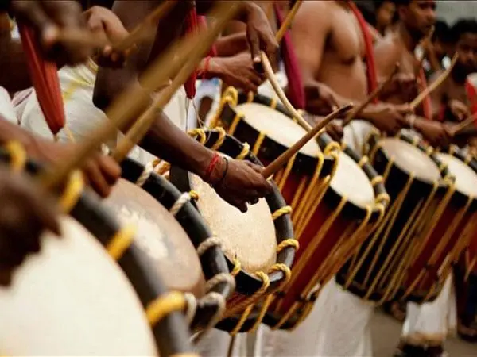
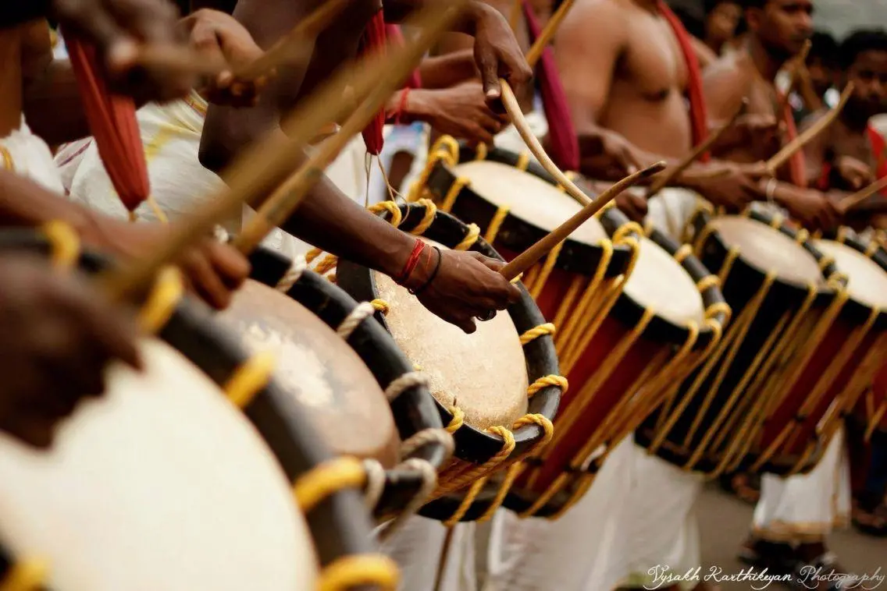
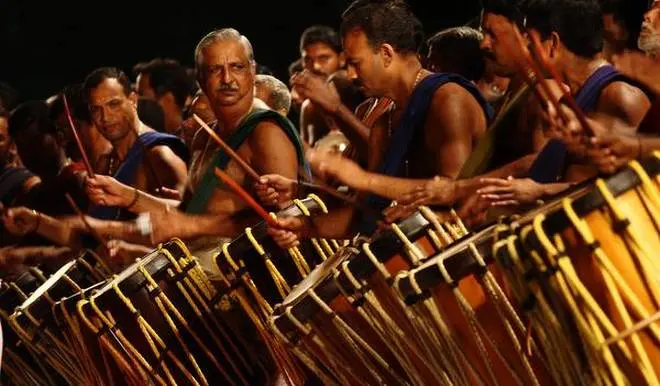

chandamelam
Music and dance are essentials of a wedding and what better way to make your moments special than to have chandamelam for Wedding Events in Chennai? If you are someone who is fascinated by the concrete sound of Chandamolam for Wedding Events in Chennai and want the sound to add lushness to your function, then you’re at the right place. We, at Vermilion events and decor, help you in finding the right set of Chandamolam for Wedding Events in Chennai to make your big day grand!